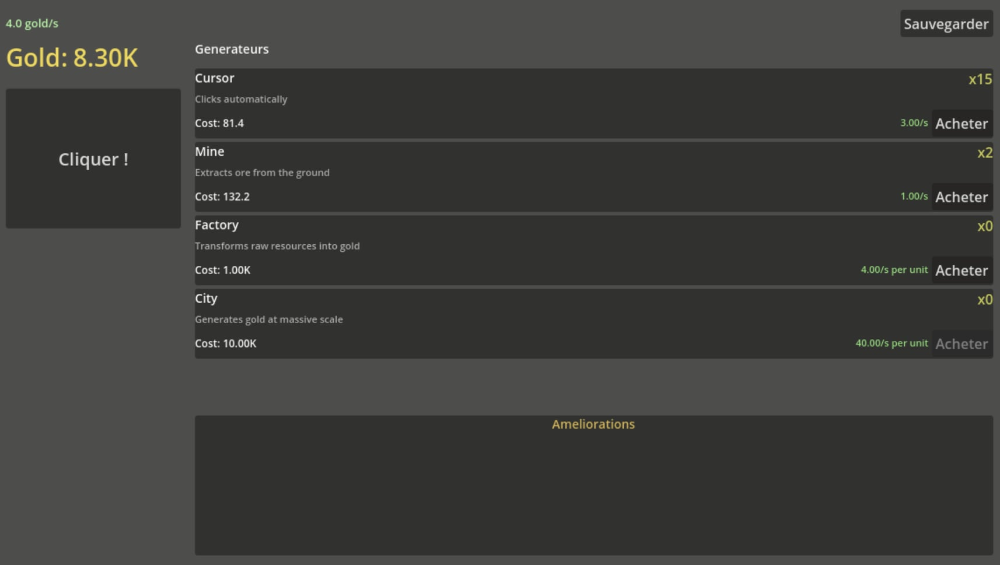
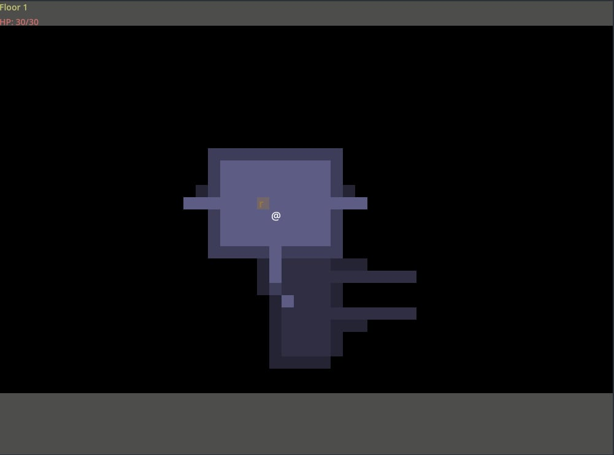
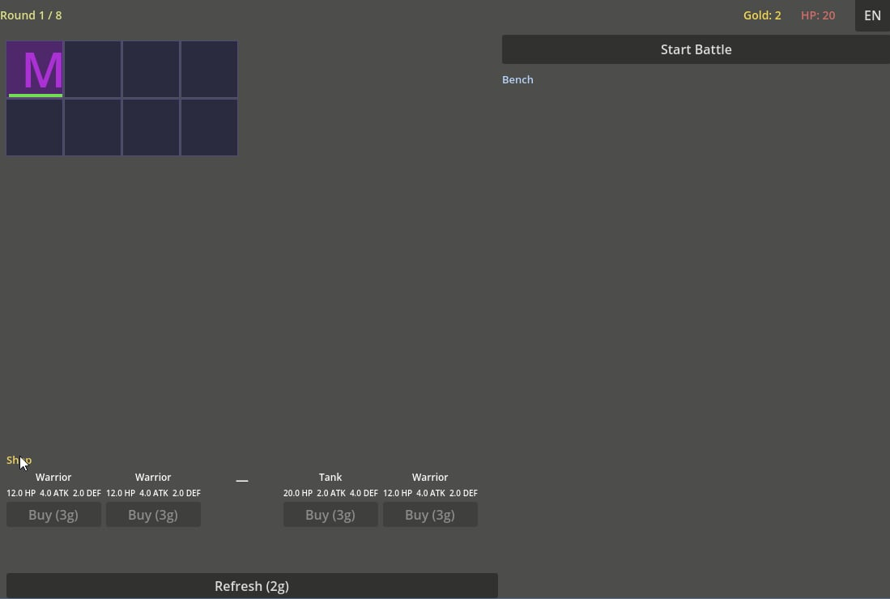
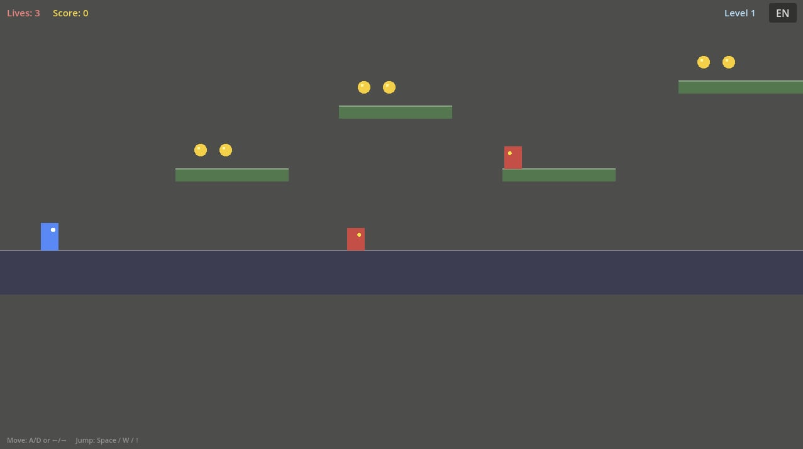
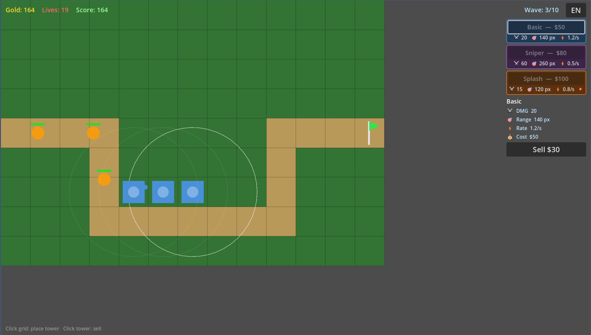
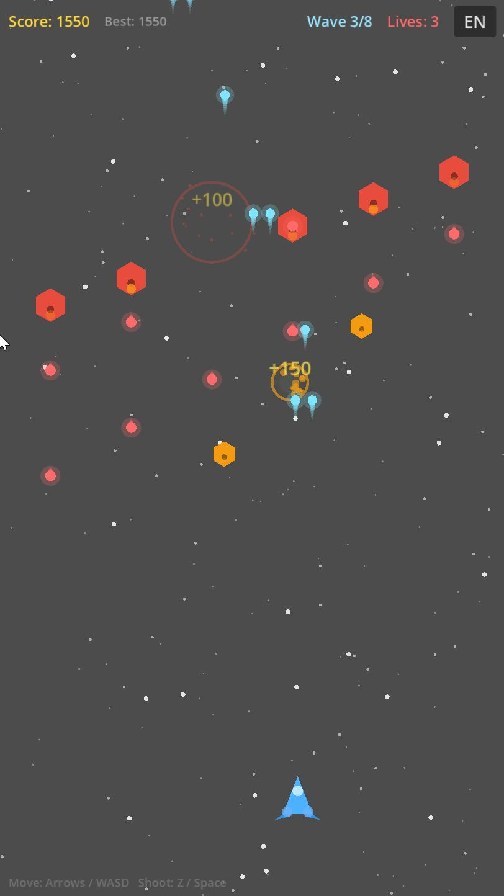
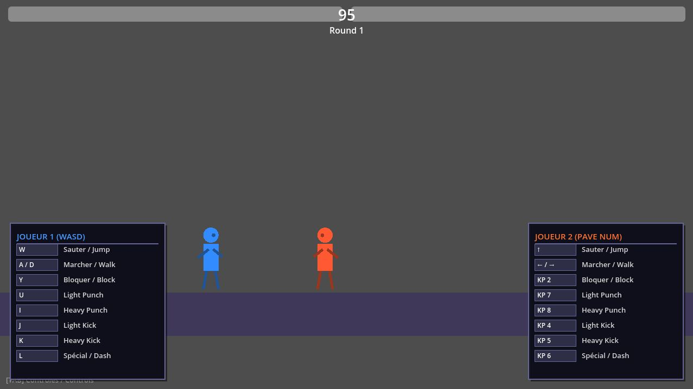
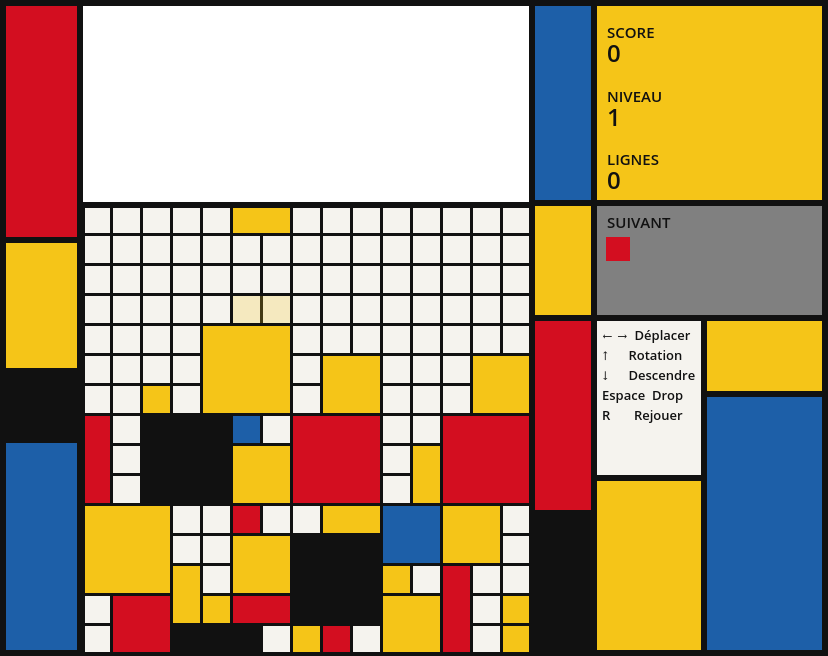

Game Templates
Description
Ce projet a un but expérimental de découverte de Godot avec l'IA. L'intention est de réaliser rapidement différents prototypes/templates minimalistes de jeux vidéos sous godot avec quelques prompts IA. L'idée est de voir ce aue l'IA génère comme bases minimales pour différents genres de jeu d'un point de vue GD avec un but pédagogique et de pouvoir expliquer la structure algorithmique nécessaire pour les différents systémes mis en place automatiquement.
Les jeux réalisés
* Idle game
* Roguelike
* Autobattler
* Platformer
* Tower defense
* Shoot 'Em Up spatial
* Fighting
* Tetris

Roguelike
Autobattler
Plateformer
Tower Defense
Shmup Spacial
Fighter
Tetris Mondrian
Back